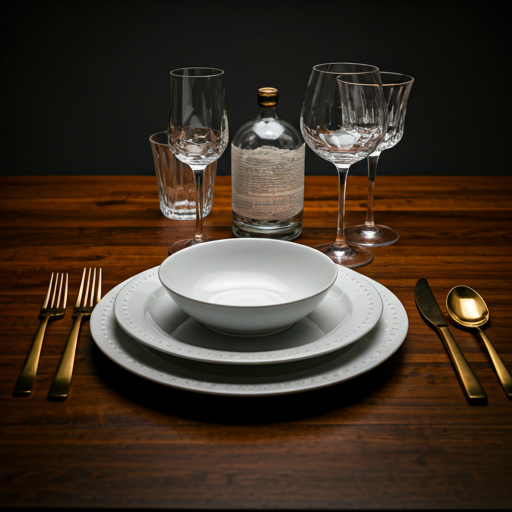
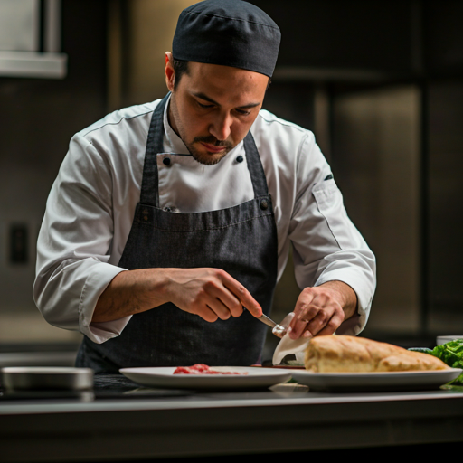
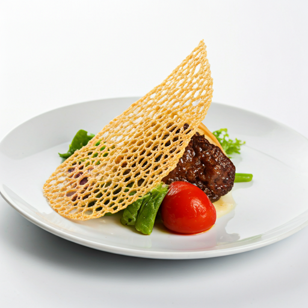
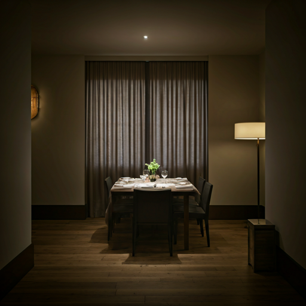
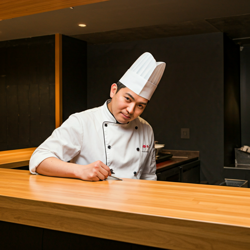
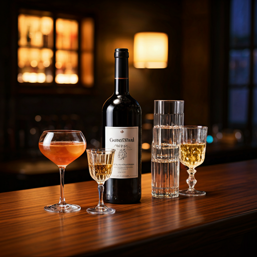

Experience culinary artistry as it unfolds. Our editorial kitchen transforms seasonal ingredients into a living narrative of taste and texture.
Our kitchen is the stage. Witness the precision of high-flame searing and the delicate touch of plating in our open-concept gastronomic studio.


Every week, our editorial team selects the peak ingredients from local boutique farms to feature in our live tasting menu.

A sanctuary of flavor. Discreet service and a personalized menu curated for your evening.
Reserve Experience
Sit at the heart of the action. Our master chef presents 12 chapters of culinary storytelling.
Limited Seats Available
Artisanal cocktails that echo the notes of our seasonal menu. Mixology elevated to art.
Walk-ins Welcome